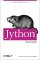

| Home | www.python.org |
| Download | Documentation |
| Home |
| Overview |
| License |
| Jython 2.0 |
| Jython 2.1 |
| Installing |
| JVM Compatibility |
| Resources |
| Applet Demos |
| Mailling Lists (exit) |
| Bugs (exit) |
| Jython Users |
| Doc Quick Links |
| What is Jython |
| All Documentation |
| FAQ |
| JimH's Slides |
| Exits |
| Python Language |
| PSF |
| Java Language |
| Contact |
|
Questions on Jython? jython-users |
 |
|
|
| webmaster |
Welcome to the Jython homepage. Jython is an implementation of the high-level, dynamic, object-oriented language Python written in 100% Pure Java, and seamlessly integrated with the Java platform. It thus allows you to run Python on any Java platform.
- What is Jython?
- Jython WIKI.
- Download the latest version.
- Documentation
- The Jython FAQ.
- Brian Zimmer's Jython development blog
- Jython support in NetBeans
Jython, lest you do not know of it, is the most compelling weapon the Java platform has for its survival into the 21st century:-)
— Sean McGrath, CTO, Propylon
Jython News
- 16th March 2005
- 14th February 2005
- 24th January 2005
- 14 January 2005
The PSF recently published its list of projects to recieve grant funding. Brian Zimmer will manage the project Moving Jython Forward.
A new article on writing Eclipse JUnit tests in Jython
Random Jython Spotlight: STAF (Software Testing Automation Framework) uses Jython for its execution engine STAX (Added to Jython users page.
- 21 December 2004
- 20 December 2004
- 19 December 2004
- 25 October 2004: website revamp announced
- 25 October 2004: Progress on new-style classes implementation
- 25 October 2004: Jython tutorial
- April 2004: Newstyle branch work.
- Work is undergoing since the beginning of the year to implement new-style classes features (the biggest quantum-leap post 2.1 missing feature for a new release) on the newstyle-branch in the CVS (see e.g. this check-in). There will be a new alpha release when this branch will be merged to the trunk. We expect then a new release for the summer, with 2.2 and some 2.3 features. Leading up to the release this site will be revamped.
- 31 July 2003 : Jython 2.2 alpha 0 available
- Experimental, unstable release of Jython now available. This is an
alpha release, in that it is not feature complete for a Jython 2.2
release, and there are significant known issues.
This is a snapshot that contains a mixture of Python 2.1 and 2.2 features. Use this release at your own risk.
There has been no validation of which parts of the Python library are functional with this relase. Expect pickle and related modules to be broken, probably others as well.
Sulu added to Jython Users Page.
jEdit added to Jython Users Page.
Tim Bray announces an upcoming java.net project to add dynamic-language infrastructure, including Jython, to the NetBeans IDE.
Samuele Pedroni, Guido van Rossum and Sean McGrath represent the Python community at a dynamic languages summit. Hosted by Tim Bray of Sun.
Who uses Jython? page updated.
Random Jython Spotlight: Jython3D combining Jython and Java3D.
Over the next short while, the Jython website will be revamped. Suggestions for the revamp welcome. Send suggestions to the Jython developer mailing list.
Samuele Pedroni is making strong progress in the end-to-end modifications required to the Jython code-base in order to support new-style classes. The implementation of new style classes in Jython is a key moment on the road to compatibility with CPython 2.3 and beyond. Samuele plans to make an initial check-in of the branch on or around 15 November 2004. Stay tuned for further updates. For more details about the state of play, see the jython-dev archive here and here
Barry Feigenbaum has written a substantial two part Jython tutorial on using Jython. The tutorial consists of two PDF files: Part 1 (82 pages) and Part 2 (100 pages). First published by IBM developerWorks at http://www.ibm.com/developerWorks/.
- Work in progress
- Something from history:
- Python 1.5.2 was realeased on 14 Apr 1999.
- Python 2.0 was released on 20 Oct 2000.
- Jython Essentials by Samuele Pedroni, Noel Rappin, O'Reilly 
- Jython for Java Programmers by Robert W. Bill,
New Riders.

Development peekholes: (jan 2003). - Jython 2.1 released!
- Download the latest stable relase of Jython
here and
read a summary of recent changes.
(31-dec-2001). - New website layout.
- New colors and an jython icon created by Ivan Kougaenko. (15-jan-2001).
- Step by step installation instruction for MacOS.
- L. Humbert has contributed a guide for installation and setup of Jython on MacOS. (27-dec-2000).
- Jython project announced
- The Jython project have been created on sourceforge. Read the announcement (19-oct-2000).
Older news items from the Jython project
Jython In the press
- 10-jun-2003
- Scripting with Jython Instead of XML, Jonathan Simon on java.net
- 6-may-2003
- Uche Ogbuij in IBM developerWorks Charming Jython
- 11-apr-2002
- Noel Rappin has written another article with jython tips for python programmers.
- 2-apr-2002
- Our second Jython book called Jython Essentials was written by By Noel Rappin and Samuele Pedroni and published by O'Reilly.
- 28-mar-2002
- Noel Rappin has written an article on how to script java with Jython.
- 15-jan-2002
- The very first Jython book called Jython for Java Programmers was written by Robert W. Bill and published by New Riders.
- 8-apr-2001
- Ross Lonstein has written an article on how Jython can be integrated with BSF.
- 12-mar-2001
- Weiqi Gao shows scripting examples using Jython and Rhino (javascript).
- 18-dec-2000
- Jon Udell talks about using the JVM to implement other languages, among them JPython.
- 8-dec-2000
- Bruce Eckel has release a new revision of his Thinking in Patterns with Java book and chapter 9 has been updated to cover Jython.
- 5-dec-2000
- David Mertz has written an interview with some of the jython developers
- 8-nov-2000
- JPython is mentioned in an article that compares the Java platform with MicroSoft's .NET